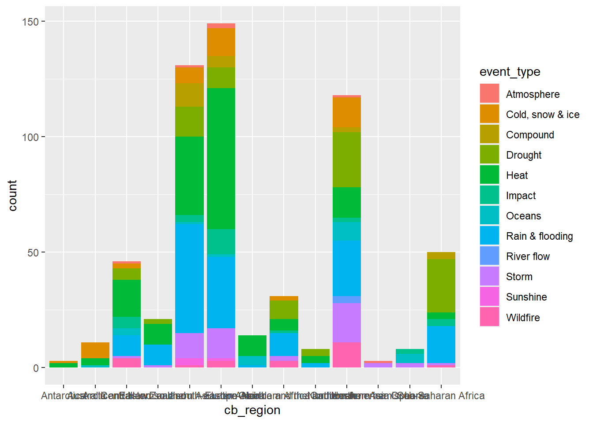

tuesdata <- tidytuesdayR::tt_load('2025-08-12')---- Compiling #TidyTuesday Information for 2025-08-12 ----
--- There are 2 files available ---
── Downloading files ───────────────────────────────────────────────────────────
1 of 2: "attribution_studies.csv"
2 of 2: "attribution_studies_raw.csv"attribution_studies <- tuesdata$attribution_studies
library(tidyverse)── Attaching core tidyverse packages ──────────────────────── tidyverse 2.0.0 ──
✔ dplyr 1.1.4 ✔ readr 2.1.5
✔ forcats 1.0.1 ✔ stringr 1.5.2
✔ ggplot2 4.0.0 ✔ tibble 3.3.0
✔ lubridate 1.9.4 ✔ tidyr 1.3.1
✔ purrr 1.1.0
── Conflicts ────────────────────────────────────────── tidyverse_conflicts() ──
✖ dplyr::filter() masks stats::filter()
✖ dplyr::lag() masks stats::lag()
ℹ Use the conflicted package (<http://conflicted.r-lib.org/>) to force all conflicts to become errorsatr_event <- attribution_studies %>%
filter(study_focus == "Event")
ggplot(atr_event, aes(x=cb_region, fill=event_type))+
geom_bar(stat="count")
paleta <- c("#C5B0CD","#98A1BC","#A2AF9B", "#D1A980","#B9375D", "#640D5F","#9ECAD6", "#34699A", "#2A1458",
"#273F4F", "#FE7743", "#DC3C22")
plot2 <- ggplot((filter(atr_event, cb_region !="Northern hemisphere")), aes(x=cb_region, fill=event_type))+
geom_bar(stat="count", position=position_dodge2(preserve="single"), alpha=0.8)+
labs(x = "Region", y = "Number of events", fill = "Event Type:",
title = "Number and types of extreme weather events across the World",
subtitle = "Plot for TidyTuesday - DataChaos") +
facet_wrap(~cb_region, scales="free", strip.position="bottom")+
scale_y_continuous(expand=c(0,0))+
theme_bw()+
scale_fill_manual(values=paleta)+
guides(fill = guide_legend(label.position = "top"))+
theme(axis.text.x = element_blank(),
axis.title.x = element_blank(),
#strip.placement = "outside",
#legend.position = "bottom",
strip.background.y = element_rect(fill = "white", color = "white"),
strip.background.x = element_rect(fill = "white", color = "black"),
strip.text.x = element_text(face="bold", size=9),
legend.text = element_text(size = 8),
legend.title = element_text(size = 10),
legend.key.size = unit(0.3, "cm"),
plot.subtitle = element_text(size=10, face="italic"),
axis.ticks.x = element_blank())
plot2